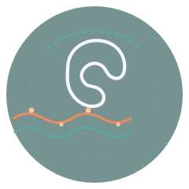
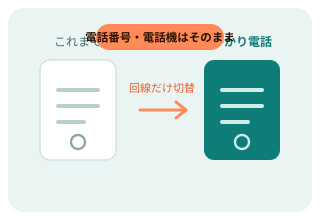

IP PHONE SERVICE
今の電話番号も電話機も、
そのまま使える「ひかり電話」
「ひかり電話」は、光回線を利用したNTT東日本・NTT西日本のIP電話サービスです。多くの場合、今お使いの電話番号や電話機を継続して利用でき、通話料はNTTの加入電話（アナログ回線）よりも抑えられる場合があります。このページでは、正規代理店ベストリンク株式会社を通じた申し込み窓口をご紹介します。
無料相談・お見積もりを見る※本ページは広告（アフィリエイトリンク）を含みます。当サイト（NAO WEB LAB）が独自に作成した紹介ページであり、サービスの提供元・代理店ではありません。
AT A GLANCE
サービスの基本情報
月額基本料（税抜・ベーシックプラン、公式サイトより）
全国一律通話料（税抜・3分あたり）
電話・メールでの申し込み受付窓口
こんなお悩み、ありませんか？
- 固定電話の基本料金が高いと感じている
- 電話番号は変えずに、料金や仕組みだけ見直したい
- 光回線とセットでまとめて手続きできると助かる
- 相談窓口がいくつもあって、どこに聞けばいいか分からない
そんな方に知っていただきたいのが、光回線を使ったNTTのIP電話サービス「ひかり電話」です。
ABOUT
「ひかり電話」とは
「ひかり電話」は、NTT東日本・NTT西日本が提供する、光回線を利用したIP電話サービスです。加入電話と同じように市外局番から始まる電話番号を使うことができ、多くの場合、今お使いの電話番号・電話機をそのまま継続して利用できます（対応可否は回線状況により異なるため、公式サイトでご確認ください）。今回ご紹介する申し込み窓口は、NTT東日本・西日本の正規代理店であるベストリンク株式会社（代理店コード：1016490870）が運営しています。
FEATURES
ひかり電話の主な特徴

電話番号はそのまま
市外局番から始まる今の電話番号を、多くの場合そのまま継続して利用できます（回線状況により異なります）。
電話機もそのまま
一般的な家庭用・ビジネス用の電話機の多くはそのまま利用できます（回転式ダイヤル電話など一部機器を除く）。
通話料は全国一律
距離にかかわらず全国一律8円（税抜）〜/3分の通話料金なので、遠方への通話でも料金が気にしにくくなります。
ビジネス向けオプションも
オフィスタイプでは最大300ch（チャンネル）の同時接続に対応するプランもあり、店舗・企業の電話回線としても検討できます。
PLAN
料金プランの一例
2026年9月に確認した公式サイトの情報では、個人・SOHO向けから法人向けまで、次のようなプランが案内されていました。料金・条件は時期により変動するため、詳細は必ず公式サイトでご確認ください。
ベーシックプラン
個人のご家庭向けの基本プラン。
ひかり電話 Aエース
無料オプション6種類と、最大3時間の無料通話が付帯するプラン。
オフィスタイプ
最大8ch（チャンネル）の同時接続に対応する、小規模店舗・事業所向けプラン。
オフィス Aエース
最大300ch（チャンネル）の同時接続に対応する、法人規模向けプラン。
※上記は2026年9月に確認できた公式サイトの案内内容にもとづく一例です。実際の料金・条件はエリアや契約内容により異なる場合があるため、お申し込み前に公式サイトまたは窓口でご確認ください。
FOR YOU
こんな方におすすめです
- 個人のご家庭で、固定電話の料金プランを見直したい方
- SOHOやひとり事業主で、固定電話は必要だがコストは抑えたい方
- 店舗・飲食店で、複数台の電話機をまとめて導入・見直したい方
- 支店・営業所など、オフィス規模の電話回線を検討している法人のご担当者
IMPORTANT
申し込み前に知っておきたいポイント
- 公式サイトの案内によると、ひかり電話の利用にはフレッツ光など対応する光回線の契約が前提となります。未契約の場合の案内も用意されているとのことです。
- 加入電話（アナログ回線）と異なり、停電時には利用できない場合があります。
- 利用には対応ルーターが必要で、一般的な家庭用ルーターでは動作しない場合があります。
- 回転式ダイヤル電話など、一部の電話機は対応していません。
- 料金・プラン内容・キャンペーンなどは時期により変動するため、お申し込み前に必ず公式サイトの最新情報をご確認ください。
HOW TO
申し込みまでの流れ
- 1
公式窓口へお問い合わせ・お申し込み
CTAボタンから公式サイトに移動し、電話またはメールで申し込み内容を確認・相談します。
- 2
電話番号を決定する
今の電話番号を継続するか、新しい番号を取得するかなど、窓口の案内に沿って決定します。
- 3
ひかり電話が開通する
必要な工事・切り替え手続きの案内を受けたのち、ひかり電話をご利用いただけます。
FAQ
よくある質問
公式サイトの案内によると、多くの場合、今お使いの電話番号をそのまま継続して利用できます。ただし回線状況やエリアによって対応可否が異なるため、申し込み時に窓口へご確認ください。
一般的な家庭用・ビジネス用の電話機の多くはそのまま利用できると案内されています。ただし回転式ダイヤル電話など一部の機器には対応していません。
公式サイトの案内では、ひかり電話は加入電話（アナログ回線）と異なり、停電時には利用できない場合があるとされています。
2026年9月に確認した時点では、基本プランの月額基本料は550円（税抜）から、通話料は全国一律8円（税抜）からと案内されていました。プラン内容や料金は時期により変更される場合があるため、最新情報は公式サイトでご確認ください。
公式サイトの案内では、ひかり電話の利用にはフレッツ光など対応する光回線の契約が前提とされています。未契約の場合の案内も用意されているとのことですので、詳細は窓口にご確認ください。
ご利用にあたっての注意事項
- 本ページは、A8.net経由のアフィリエイトプログラムを利用してNAO WEB LABが独自に作成した紹介ページです。「ひかり電話」提供元のNTT東日本・NTT西日本、および正規代理店のベストリンク株式会社が制作・監修したものではありません。
- 掲載内容は2026年9月時点で確認できた公式サイトの情報をもとに作成しています。料金・プラン内容・キャンペーンなどのサービス内容は変更される場合がありますので、お申し込み前に必ず公式サイトで最新情報をご確認ください。
- 対応可否・工事の要否・費用は、回線状況やお住まいのエリアにより異なります。最終的なご契約内容は、公式窓口にご確認のうえご判断ください。